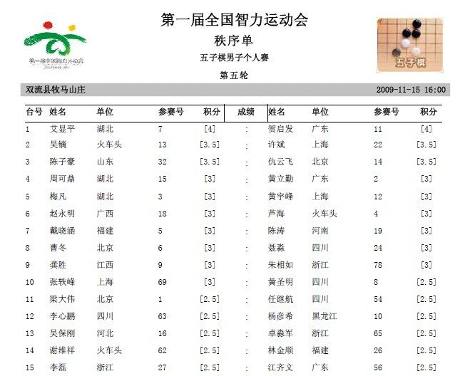
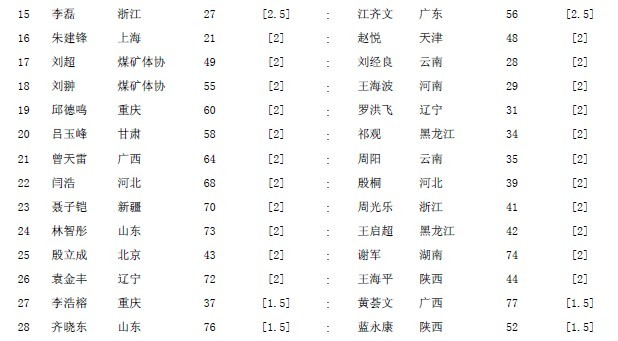
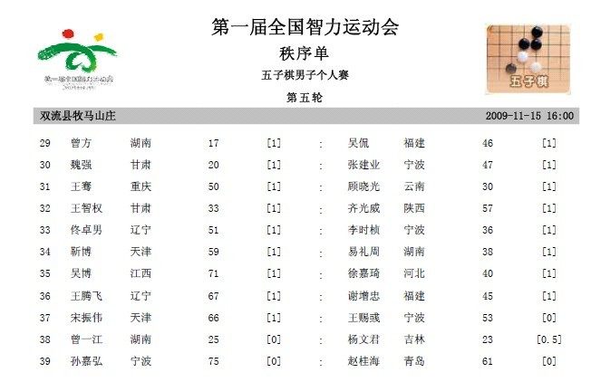
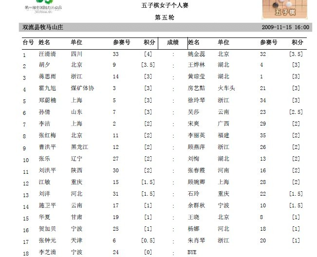

第五轮对阵
首页
全国智运会专题
#1 第五轮对阵 作者：我就不信注册不上 发表时间：2009-11-15 16:28:21



#2 Re:第五轮对阵 作者：我就不信注册不上 发表时间：2009-11-15 16:28:46

#3 Re:第五轮对阵 作者：隐藏菜系 发表时间：2009-11-15 16:43:06
加油啊健儿们！加油！
#4 Re:第五轮对阵 作者：不知 发表时间：2009-11-15 16:47:14
 有所有人的比赛谱不?哪位有心人能帮忙传上来看看.谢谢
有所有人的比赛谱不?哪位有心人能帮忙传上来看看.谢谢
#5 Re:第五轮对阵 作者：屏蔽 发表时间：2009-11-15 17:09:39
祝吴镝雄起，哈哈……
#6 Re:第五轮对阵 作者：裁决殿雪月 发表时间：2009-11-15 18:35:51
第一台很期待，哈哈！
#7 Re:第五轮对阵 作者：武汉荆楚情 发表时间：2009-11-15 18:58:10
湖北艾显平5连胜！ 汪倩倩5连胜！小黄要加油了！
汪倩倩5连胜！小黄要加油了！
#8 Re:第五轮对阵 作者：hgfe 发表时间：2009-11-15 20:37:09
高飞是一骑绝尘，大鱼难得的稳定
他人均各有胜负，看来实力不差几
精彩将逐步呈现，悬念正悄悄挂起